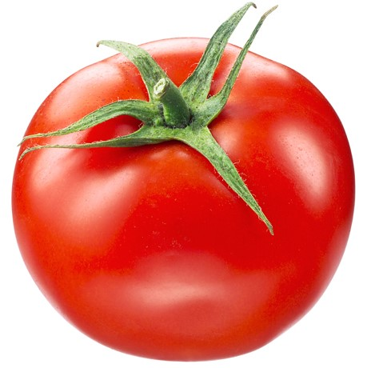

TOMAT
Manfaat
Tomat (Solanum lycopersicum) dikenal sebagai buah yang rendah kalori dan lemak serta kaya akan vitamin dan mineral, seperti vitamin A, vitamin C, folat, dan kalium. Buah ini juga mengandung berbagai antioksidan, seperti likopen, lutein, dan zeaxanthin. engkonsumsi tomat sangat disarankan bagi penderita diabetes, infeksi saluran kemih, masalah pencernaan, meningkatkan sirkulasi darah, solusi kecantikan kulit, memperbaiki keseimbangan cairan, mencegah penuaan dini, kesehatan otak dan masih banyak lagi yang lainnya.
Tempat Tumbuh
Tanaman Tomat (Solanum lycopersicum) merupakan tanaman yang bisa tumbuh di segala tempat. Tanaman tomat dapat tumbuh baik di dataran tinggi (lebih dari 700 mdpl), dataran medium (200-700 mdpl), dan dataran rendah (kurang dari 200 mdpl). Suhu lingkungan antara 24-28 oC dan kelembaban udara 80% serta butuh mendapatkan sinar matahari 10-12 jam sehari.
TEKNIK BUDIDAYA
1. Pembibitan
Benih tomat bisa didapatkan dengan cara membeli benih atau dengan membuat benih sendiri. Apabila membeli benih, hendaknya membeli pada toko pertanian yang terpercaya menyediakan benih-benih yang bermutu dan telah bersertifikat.
Ada beberapa cara menyemai pada bedeng persemaian. Cara pertama, benih tomat ditaburkan merata pada permukaan bedengan, kemudian ditutup tanah tipis-tipis. Bedeng dibuat guritan sedalam 1 cm dengan jarak antar guritan 5 cm, lalu biji ditaburkan kedalan guritan secara merata dan tidak saling tumpuk, kemudian ditutup kembali dengan tanah tipis-tipis.
Cara kedua, dengan menanamkan benih pada lubang-lubang tanam yang dibuat dengan jarak 5 cm dan kedalaman lubang tanam sekitar 1 cm. Dalam satu lubang tanam dapat diisikan 1 atau 2 benih, kemudian ditutup tanah tipis-tipis.
Cara ketiga, penyemaian dapat langsung dilakukan pada kantong-kantong polybag yang telah diisi media tanam berupa tanah dan pupuk kandang dengan perbandingan 1:1. Setiap kantong polybag diisi satu benih saja dan tanamkan benih dengan kedalaman sekitar 1 cm. Setelah biji ditanam, media semai sebaiknya dibasahi dengan air.
2. Persiapan Lahan
Tanah digemburkan dengan cara dicangkul tipis-tipis sehingga diperoleh struktur tanah yang gembur atau remah, sekaligus untuk meratakannya. Tanah dicampur kompos atau pupuk kandang yang masak dengan perbandingan 1:1 atau 2:1. Pemberian pupuk kandang yang belum masak dapat mempengaruhi pertumbuhan tanaman, bahkan dapat mematikan tanaman karena akar tanaman tidak kuat menahan panas. Pada tahap ini, tanah yang telah ditaburi pupuk kandang atau kompos dicangkul kembali tipis-tipis dan diratakan.
Selanjutnya dibuat bedeng-bedeng membujur ke arah Timur - Barat agar penyebaran cahaya matahari dapat merata ke seluruh tanaman. Bedengan dapat dibuat lebar dengan ukuran lebar 1-1,2 m, panjang disesuaikan dengan keadaan lahannya dan tinggi bedeng 30 cm. Jika penanaman tomat dilakukan pada musim hujan, bedengan dapat dibuat lebih tinggi yaitu 40-45 cm. Bedengan yang telah dipersiapkan untuk penanaman bibit, sehari sebelumnya hendaknya diairi terlebih dahulu supaya basah. Lubang-lubang tanam dibuat sesuai dengan jarak tanam yang telah ditentukan.
3. Penanaman
Bibit tomat dapat dipindahkan ke kebun setelah berumur 30-45 hari di persemaian. Pada saat dilakukan penanaman ke kebun, sebaiknya dilakukan lagi terhadap bibit-bibit yang telah berumur 30-45 hari agar diperoleh tanaman yang baik pertumbuhannya dan memiliki daya produktivitas tinggi dalam menghasilkan buah. Untuk itu, bibit yang dipilih sebaiknya yang berpenampilan menarik dan baik., yaitu penampakannya segar dan daun-daunnya tidak rusak. Pilihlah bibit yang kuat, yaitu tegak pertumbuhannya dan pilihlah bibit yang sehat, artinya bibit tidak terserang hama dan penyakit. Waktu yang baik untuk menanam bibit tomat di kebun adalah pagi atau sore hari. Pada saat itu keadaan cuaca belum panas sehingga mencegah kelayuan pada tanaman.
4. Pemeliharaan
Penyiraman dilakukan sejak benih ditaburkan ke bedeng pesemaian sampai tanaman siap dipindah ke kebun. Penyiraman dilakukan 2 kali sehari, yaitu pagi dan sore hari. Penyiraman sebaiknya dilakukan dengan menggunakan alat/gembor yang memiliki lubang halus, agar tidak merusak bibit tanaman yang sudah atau baru tumbuh.
Penyiangan dapat dilakukan dengan cara langsung mencabuti tanaman pengganggu tanpa peralatan. Penyiangan sebaiknya dilakukan seperlunya saja dengan melihat keadaan tanaman.
Hama yang umumnya menyerang benih atau bibit di pesemaian berasal dari golongan serangga, seperti semut dan golongan nematoda, seperti cacing tanah. Penyakit yang sering menyerang dari golongan cendawan. Untuk mencegah berkembangnya hama dan penyakit dapat dilakukan sterilisasi tanah. Untuk memberantas hama dan penyakit yang menyerang dapat disemprotkan obat-obatan.
5. Panen
Pemetikan buah tomat dapat dilakukan pada tanaman yang telah berumur 60-100 hari setelah tanam tergantung pada varietasnya. Varietas tomat yang tergolong indeterminatre memiliki umur panen lebih panjang, yaitu berkisar antara 70-100 hari setelah tanam baru bisa dipetik buahnya.
Kriteria masak petik yang optimal dapat dilihat dari warna kulit buah, ukuran buah, keadaan daun tanaman dan batang tanaman, yakni sebagai berikut: a) kulit buah berubah, dari warna hijau menjadi kekuning-kekuningan; b) bagian tepi daun tua telah mengering; c) batang tanaman menguning/mengering.